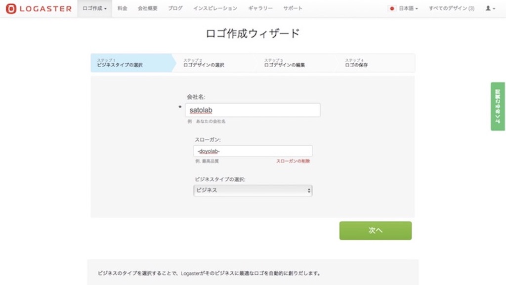
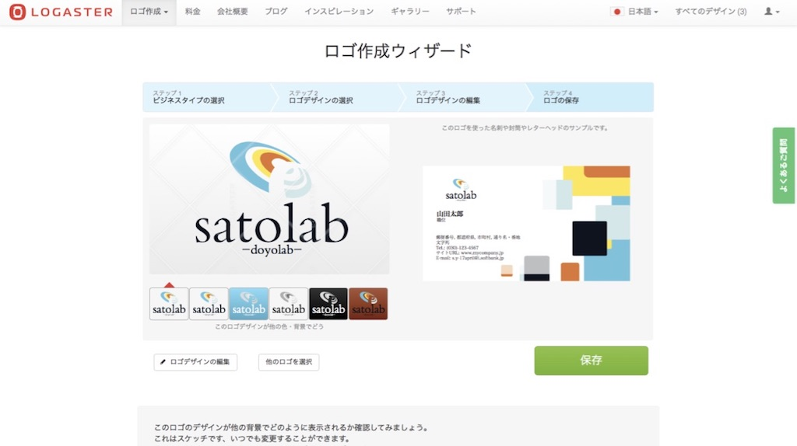
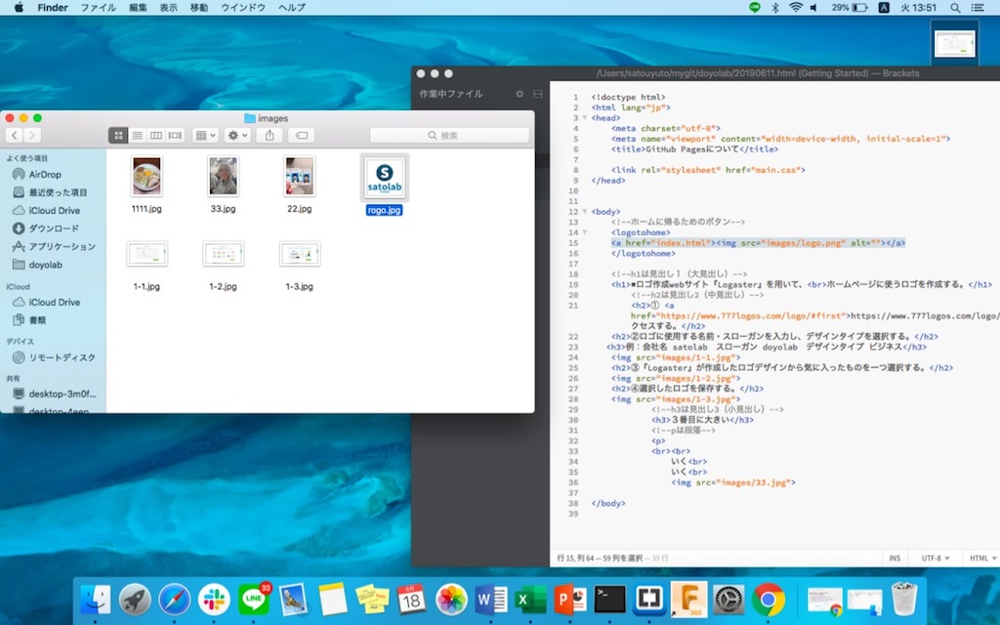

■ロゴ作成webサイト『Logaster』を用いて、
ホームページに使うロゴを作成する。
※このページで紹介するやり方はMacOS10.13.6で動作確認したものです。
また、道用先生が作成したmtmlのフォーマットをお借りして使用しています。（こちらから）
❷ロゴに使用する名前・スローガンを入力し、デザインタイプを選択する。
例：会社名 satolab スローガン doyolab

❸『Logaster』が作成したロゴデザインから気に入ったものを一つ選択する。
❹選択したロゴを保存する。

❺Bracketsに書く
⑴ロゴデータをmygit→doyolab→『images』という新しいフォルダを作り、そこに入れる。
例：rogo.jpg
⑵index.htmlにて＜body＞＜logo＞と書き、＜img src="images/rogo.jpg"alt=""＞と入力
これはつまりロゴデータ『logo.jpg』を『images』フォルダから持ってきて、ロゴとして表示するという意味
⑶最後にcommand＋Sで保存し、Brackets右上の雷マークのライブプレビューで確認する。

おつかれさまでした。
一緒にhtmlを頑張っていきましょう！